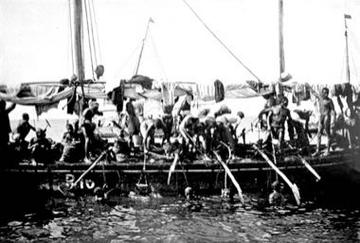
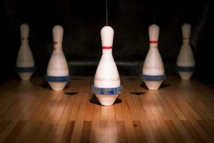
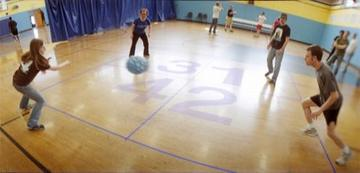
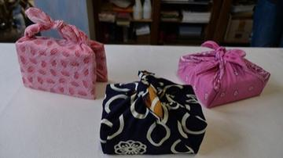

Falaj Water-Turn Clock
Oman · Board and table gamesFan-tan
China · Other traditionsFanoron-Telo
Madagascar · Board and table gamesFanorona
Madagascar · Board and table games
Faroese chain dance
Denmark · Dances
Faso Dan Fani Strip Weaving
Burkina Faso · Crafts and making
Faustball
Germany +2 · Other traditionsFierljeppen
Netherlands · Street and playground gamesFijian tag
Fiji · Street and playground games
Fijiri Pearl-Diver Sea Songs
Kuwait +1 · Musical instrumentsFinch sitting
Belgium · Other traditions
Finger Hooking
Germany +1 · Wrestling and martial sportsFinger pulling
Austria · Street and playground games
Finnish pin toss
Finland · Dexterity and skill gamesFireball
Paraguay · Street and playground gamesFive stones
Malaysia +1 · Dexterity and skill games
Five-Pin Bowling
Canada · Other traditions
Floating market trader
Thailand · Board and table gamesFlower or Empty
Iran · Street and playground gamesFohr
Cote d'Ivoire · Board and table gamesFooty
Nauru · Street and playground gamesFour Corners
Cuba · Street and playground games
Four Square
United States · Other traditions
Four-Field Kono
South Korea · Board and table games
Freetown Beach Seine Haul
Sierra Leone · Performance and storytellingFrevo Umbrella Dance
Brazil · DancesFrisian kaatsen
Netherlands · Street and playground games
Frisian Road Bowling
Ireland +2 · Dexterity and skill gamesFrog toss
Ecuador · Dexterity and skill games
Fujara
Slovakia · Musical instruments
Fukuwarai
Japan · Puzzles and mind games
Fula Riti One-String Fiddle
Guinea · Musical instruments
Furoshiki
Japan · Crafts and makingFuu Fuu Penu
Tuvalu · Street and playground games